Physics-based AI that reads raw seismic data and tells you what is actually in the ground — before the well is committed, before the boreholes are drilled.
Seismic images show the shape of the layers. The answer — what is in them — is buried under everything above the target. Today that answer is inferred from a processed picture, and the industry pays for the gap.
of exploration wells fail to find a commercial reservoir.
AAPG; Westwood Energy 2025; Rystad Energy 2025lost every year to dry holes and the delays they cause.
Deep Signals market analysis, 2026of an offshore project's cost goes to boreholes that say nothing about the ground between them.
Deep Signals market analysis, 2026We work on the recorded wavefield, before processing discards the information that matters.
Our models follow the signal to the target and back, so the answer is grounded in wave physics, not in pattern-matching.
A clear verdict on the target, explainable, with no well logs required.
Patent pending. We do not publish the method; we are happy to discuss it under NDA.
A go/no-go verdict on a prospect from the seismic alone, in basins where nothing has been drilled yet.
A virtual borehole between the physical ones: soil type and strength, layer by layer, trained on the site's own data.
Israel Ports Company; stage 1 complete across 24 borehole locations.
correct soil classification (rock vs sand) in a sea trial of about 450 samples.
pilot agreements being closed with oil and gas operators and offshore asset owners.
on the core method.
Physics-based AI that classifies the target from raw, pre-stack seismic — without well logs, in basins where nothing has been drilled yet.
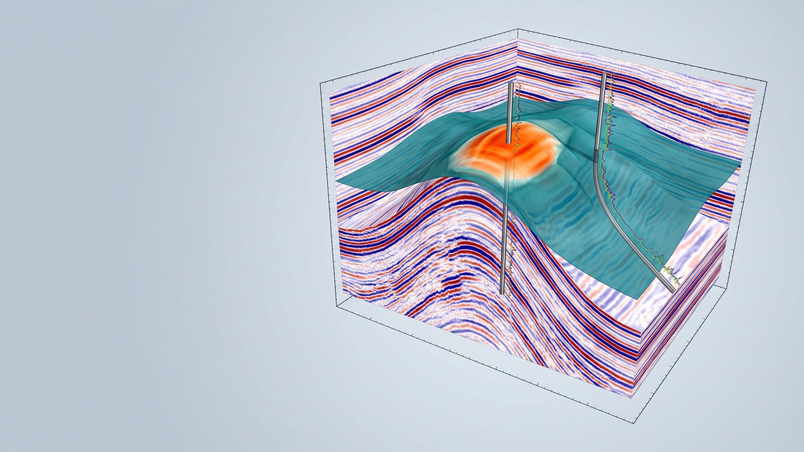
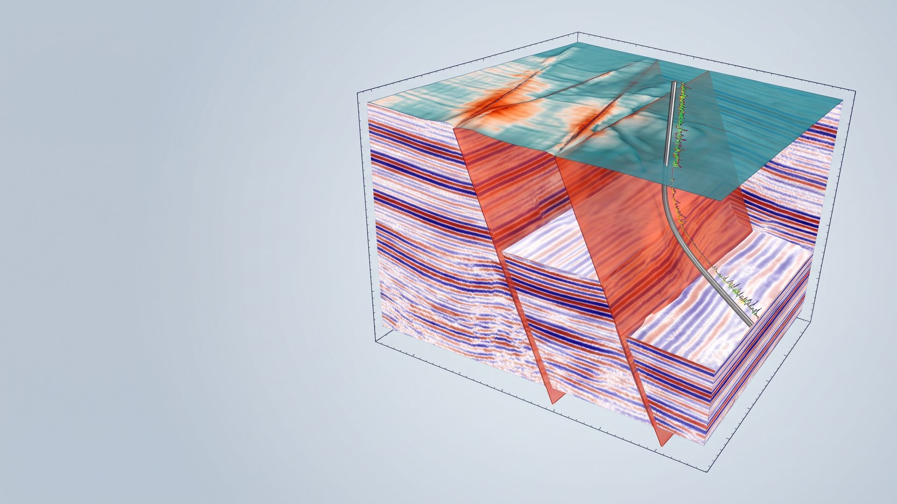
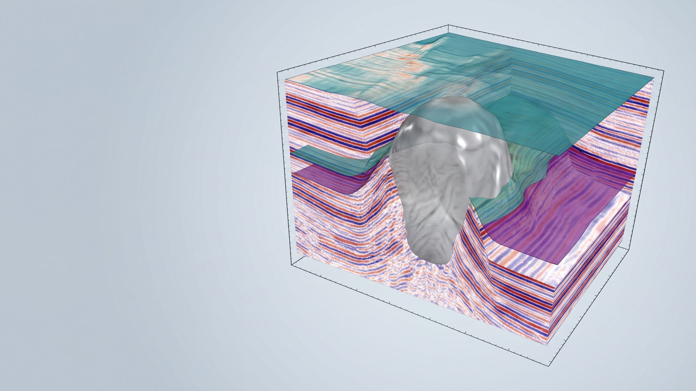
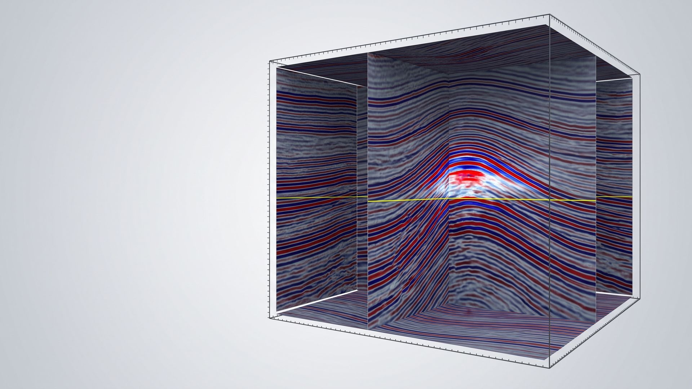
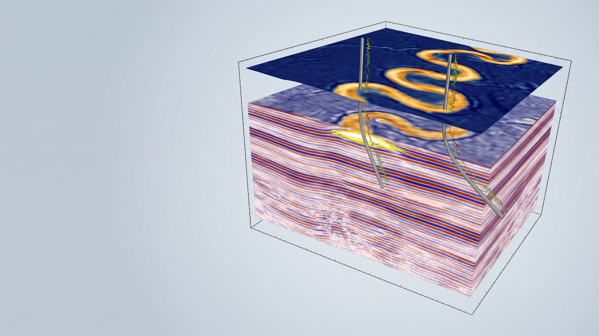
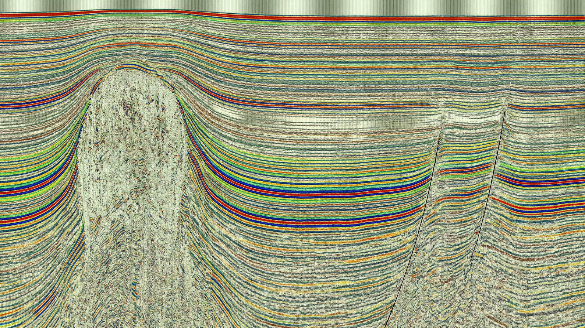
More than three in four exploration wells miss. Each one costs on the order of $20M onshore, $60M in shallow water and $200M in deep water. The decision rests on a processed image interpreted by experts, and the false positives that look like hydrocarbons and are not — fizz water, low-saturation gas — are the expensive ones.
Frontier and under-explored basins where well control is sparse; portfolio ranking before a drilling campaign; a second opinion on a high-impact well. We work alongside your existing interpretation workflow rather than replacing it.
Exploration is in its pilot phase. We are closing pilot agreements with several oil and gas operators, including advanced negotiation with an operator active in India, Mozambique and Brazil.
A pilot partner provides pre-stack data for one or more prospects. We return a classification with its physics-based rationale, benchmarked against the drilling outcome where one exists.
Talk to us about an exploration pilotThe same physics applies wherever seismic data carries information about what fills the rock. Sediment-hosted and offshore mineral targets are on our roadmap.
A virtual borehole from shallow seismic — soil type and strength, layer by layer, for offshore wind, ports, desalination and power.
Marine site investigation is slow, expensive and sparse. A single offshore borehole costs on the order of $85,000; a large investigation runs to hundreds of them over 12–18 months before FID, and still leaves every metre between the boreholes unknown. Design margins absorb that uncertainty, and the project pays twice: in the drilling and in the conservatism.
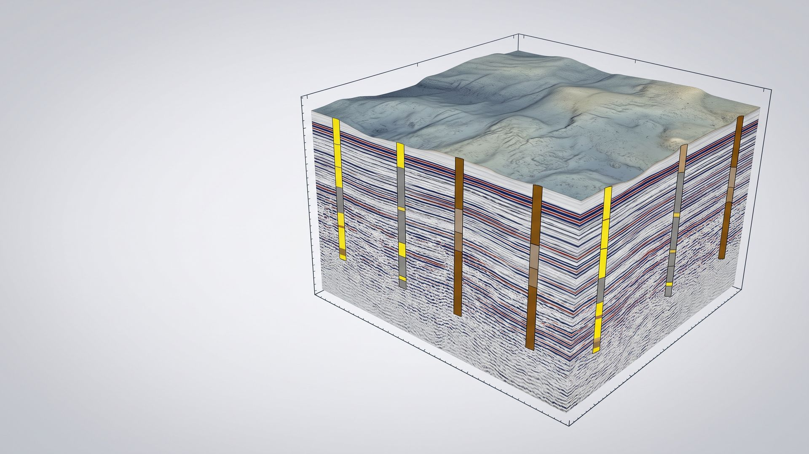
We are running a pilot with Israel Ports Company. Stage 1 — bathymetry and sub-bottom profiling across 24 borehole locations — is complete. In a sea trial, soil type (rock vs sand) was classified correctly 94% of the time across about 450 samples.
We are in discussion with offshore asset owners on the next pilots. Four to five slots are open for 2027.
Talk to us about an infrastructure pilotEvery exploration well drilled on a picture is a $20–200M bet. Every offshore site investigation drilled on a grid pays for boreholes it did not need and still leaves gaps between them.
We run a limited number of pilots each year. Pilot partners shape the product and get first access to it.
Talk to us about a pilotEvery seismic image shows the shape of the rock. None of them shows what is in it. Here is the difference, on one prospect.
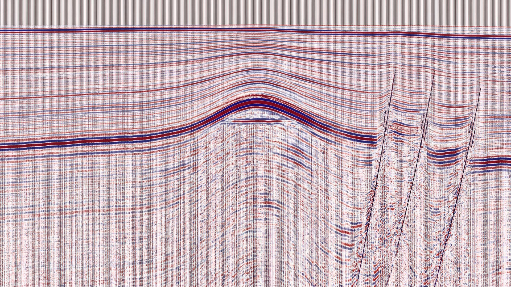
A good structure and a bright reflector. It could be gas. It could be brine. It could be water with a few percent of gas in it — which looks just like gas and is worth nothing. The industry resolves this question the expensive way: by drilling.
>75% of exploration wells drilled on pictures like this come up dry.
Before the image is made, the recorded wavefield carries the target's own response: how it absorbed the sound, how it returned it. Conventional processing flattens that into a picture and throws most of it away.
Deep Signals works on the raw, pre-stack data and follows the physics all the way to the target and back. No well logs. No calibration wells. Just the physics and the data you already have.
Not "what does it look like?" but "what is in it?"
Three prospects that look the same on the image:
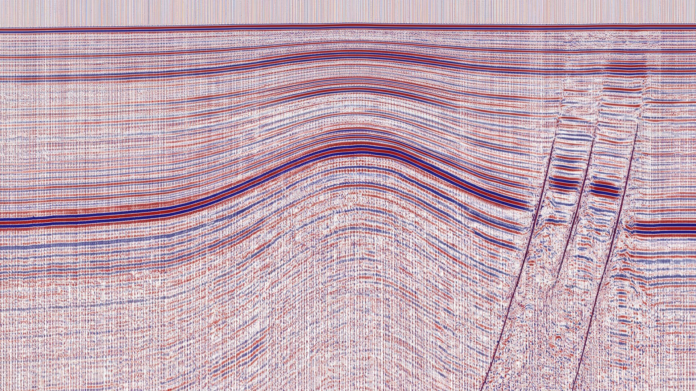
BrineNo-go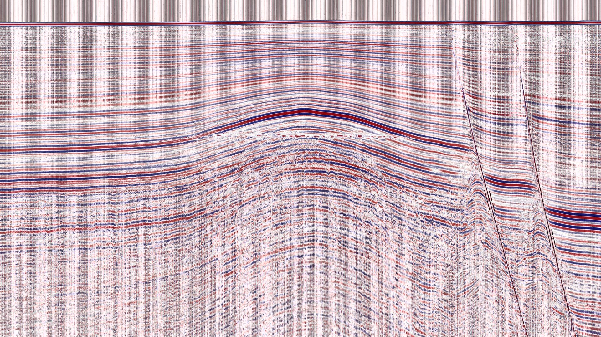
Fizz waterNo-goExplainable: every verdict traces back to a physical cause. Patent pending; method under NDA.
Our models are developed and validated against physically rigorous simulated surveys before they meet field data, and benchmarked against drilling outcomes in pilots. Patent pending: we do not publish the method, and we are happy to discuss it under NDA.
Deep Signals builds physics-based AI for subsurface characterisation. Today's workflow interprets a processed seismic image by eye; the decisive information about the target is buried under everything above it. Our engine works on the raw, pre-stack data instead, following the wavefield down to the target and back, and returns an explainable answer grounded in physics. No well logs are required, so it works where nothing has been drilled yet.
The engine serves two markets. In exploration it gives operators a clear verdict on a prospect before the well is committed. In offshore infrastructure it acts as a virtual borehole, classifying soil type and strength between physical boreholes for ports, offshore wind, desalination and power projects. Deep Signals is in its pilot phase in both markets: running with offshore asset owners, and closing agreements with several oil and gas operators. Founded in Israel; based in Haifa. Patent pending.
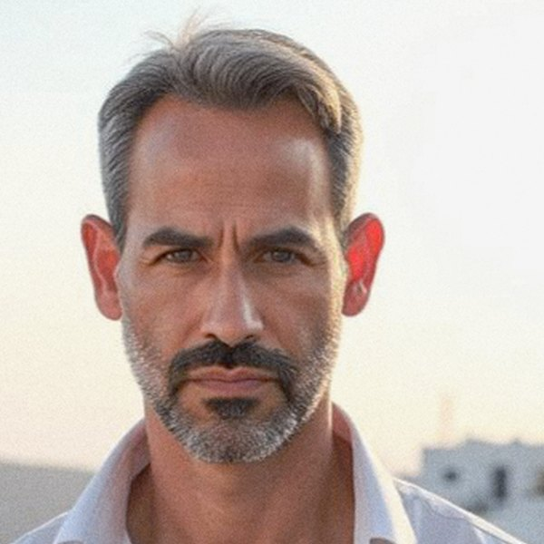
Co-founder, CEO
PhD, Technion. Former CEO of the Technion Coastal and Marine Engineering Research Institute; fifteen years running a hydrographic survey and coastal engineering company.
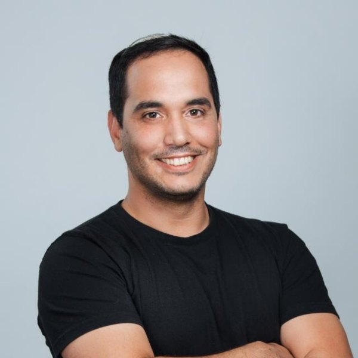
Co-founder, CTO
Product and R&D leader with a decade of building AI and 3D systems. Co-founded and ran Verto.ai, turning images into 3D content at scale for retail; three Israel Innovation Authority grants; MAMRAM Accelerator and 365x award winner.
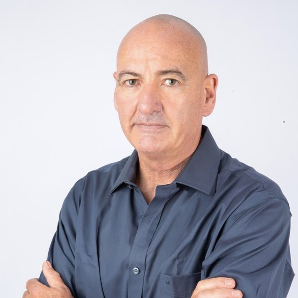
Co-founder, COO
Over thirty years in hydrographic and geotechnical surveys. FIG/IHO Category B hydrographic surveyor and commercial skipper; led marine survey operations at Seal and for Lagos Channel Management.
We run a limited number of pilots each year. Tell us about your site or prospect and we will come back to you within two working days.
One site or one to three prospects, agreed up front with clear success criteria.
Exploration: pre-stack seismic for the prospect. Infrastructure: a geophysical survey (we can run it) plus the site's existing borehole data.
A classification with its physics-based rationale, benchmarked against drilling outcomes where they exist, and a working session with our team.
Your data stays yours. NDA before any data changes hands.